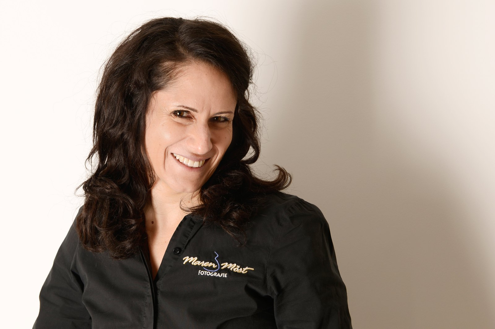

Über mich
Maren Möst – Hundefotografin in Waiblingen.
Als Hundefotografin in Waiblingen arbeite ich mit ruhigem Licht, Geduld und klarer Bildsprache, damit aus einem vertrauten Blick ein zeitloses Porträt wird.

Handwerk
Kamera, Licht, Geduld. Und ein Blick für Wesen.
Im Studio geht es nicht um Tempo. Licht wird gesetzt, Pausen werden zugelassen, und jedes Motiv bekommt Raum, bevor es zum fertigen Bild wird.


Mein Hintergrund liegt in der Medienwelt: ein Studium der Medienwirtschaft (B.A.) und langjährige Erfahrung mit der Kamera bei Film- und Fernsehproduktionen. Seit über zehn Jahren bin ich auf Porträtfotografie spezialisiert – und mein Herz schlägt für Hunde. Diese Erfahrung prägt bis heute, wie ich arbeite: aufmerksam, bildbewusst und mit einem klaren Gefühl für Licht, Komposition und Timing.
In der Hundefotografie interessiert mich nicht der perfekte Trick, sondern der Moment dazwischen: ein ruhiger Blick, eine feine Körperhaltung, ein Ausdruck, der wirklich zum Tier gehört.
Darum plane ich Shootings mit Zeit. Auch sensible Hunde dürfen ankommen, schnuppern und Pausen machen. Erst wenn Ruhe entsteht, entstehen Bilder, die sich nicht gestellt anfühlen.
10+ Jahre
Erfahrung
Waiblingen
Studio · Raum Stuttgart
Nur Hunde
Spezialisierung
Mein Versprechen
Zeit, Ruhe und Vertrauen.
Mein Versprechen: Ich nehme mir die Zeit, bis Ihr Hund wirklich angekommen ist, und schenke Ihnen Bilder, die auch in vielen Jahren noch berühren. Ein gutes Bild beginnt nicht mit dem Auslöser, sondern mit Vertrauen. Darum sollen sich Ihr Hund und Sie im Studio wohlfühlen.
Termin anfragen
Lernen wir uns kennen.
Ich freue mich auf Sie und Ihren Hund, ganz in Ruhe und mit Zeit.
Ihre Anfrage ist unverbindlich – ich melde mich persönlich bei Ihnen.